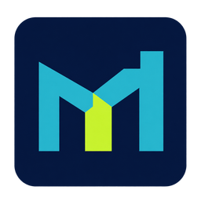
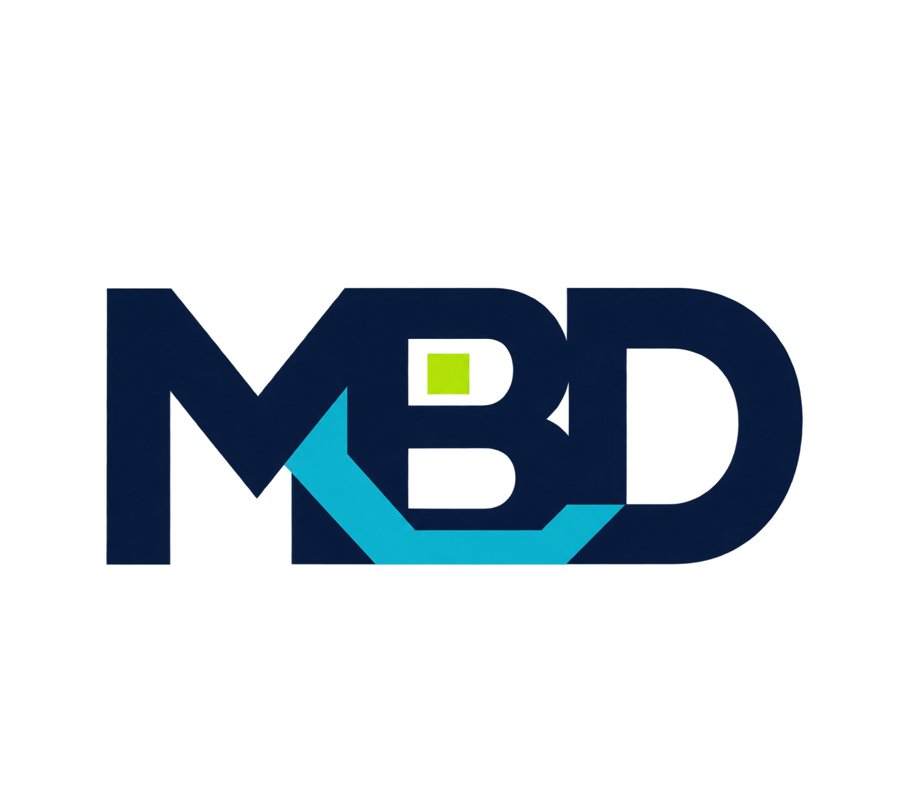
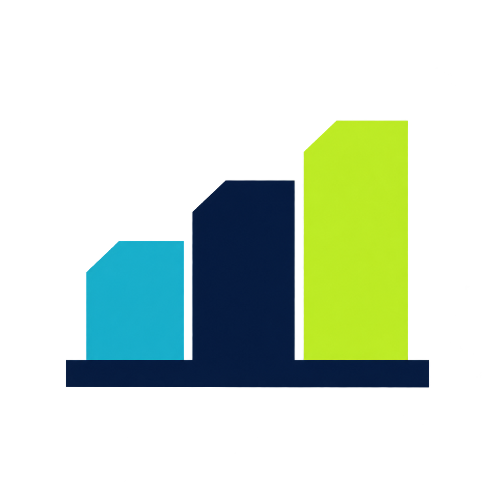
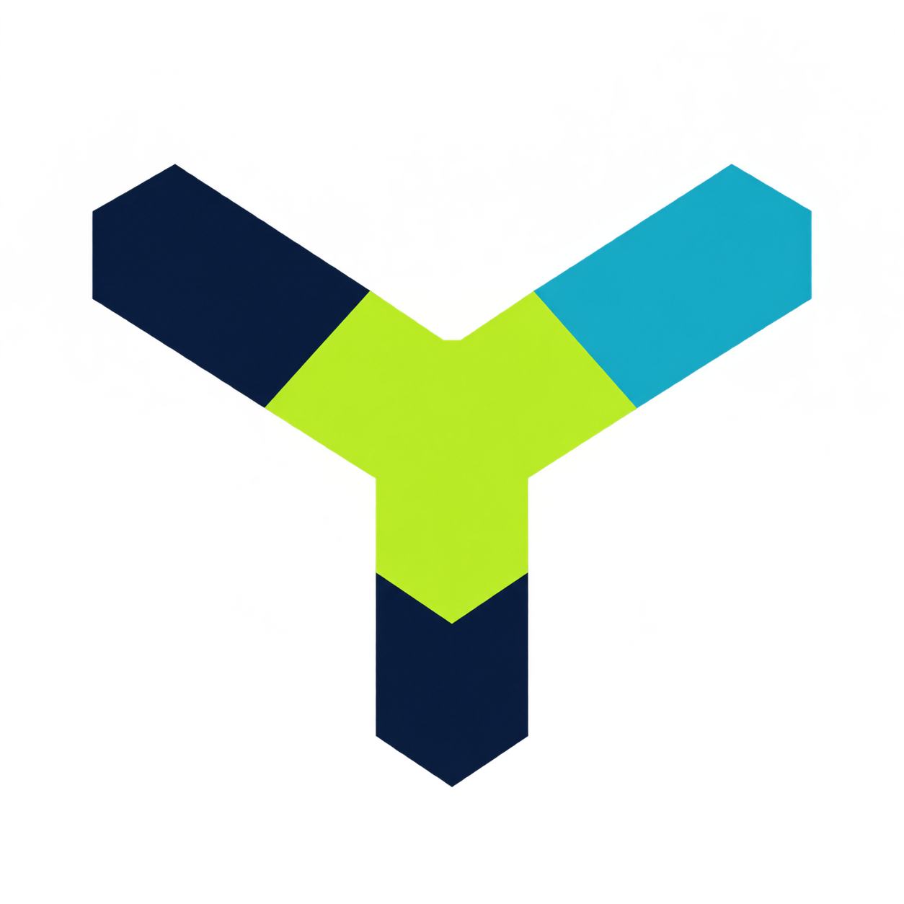
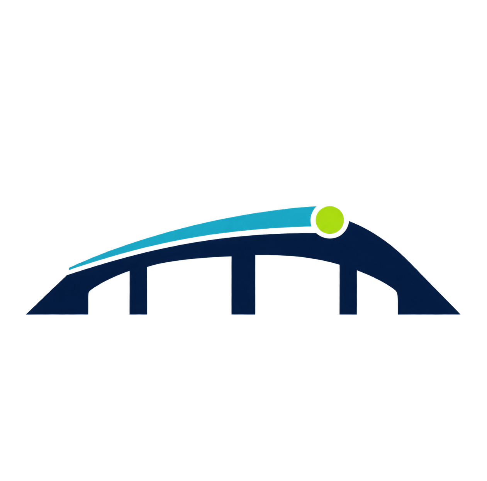
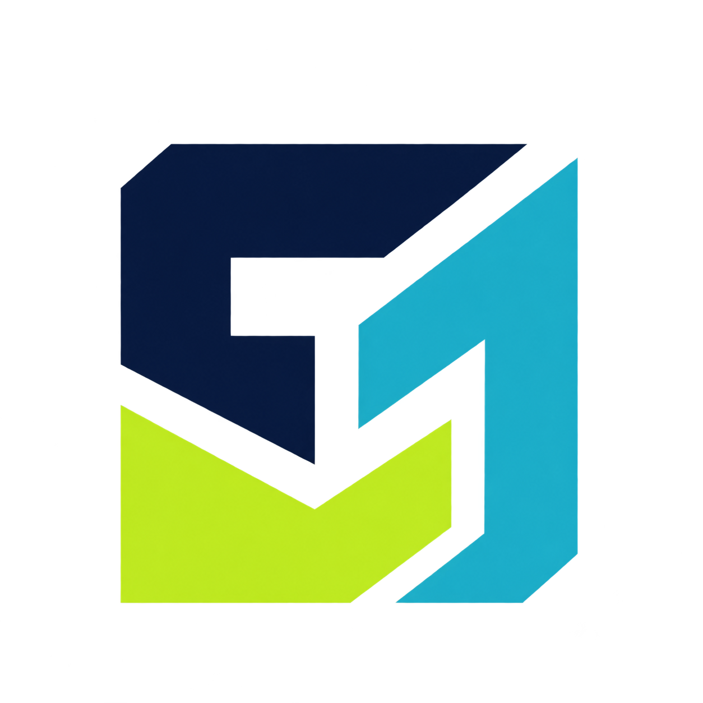
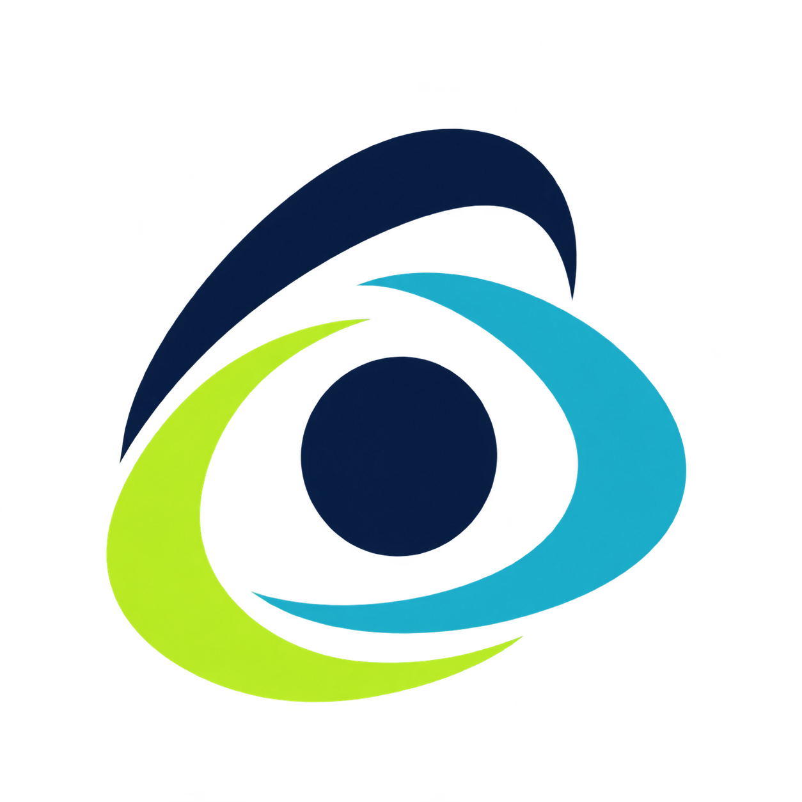
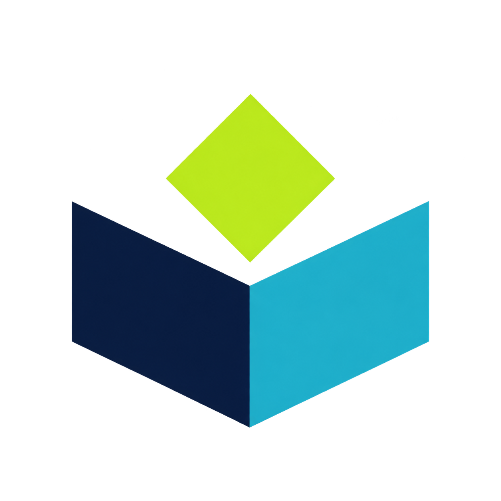
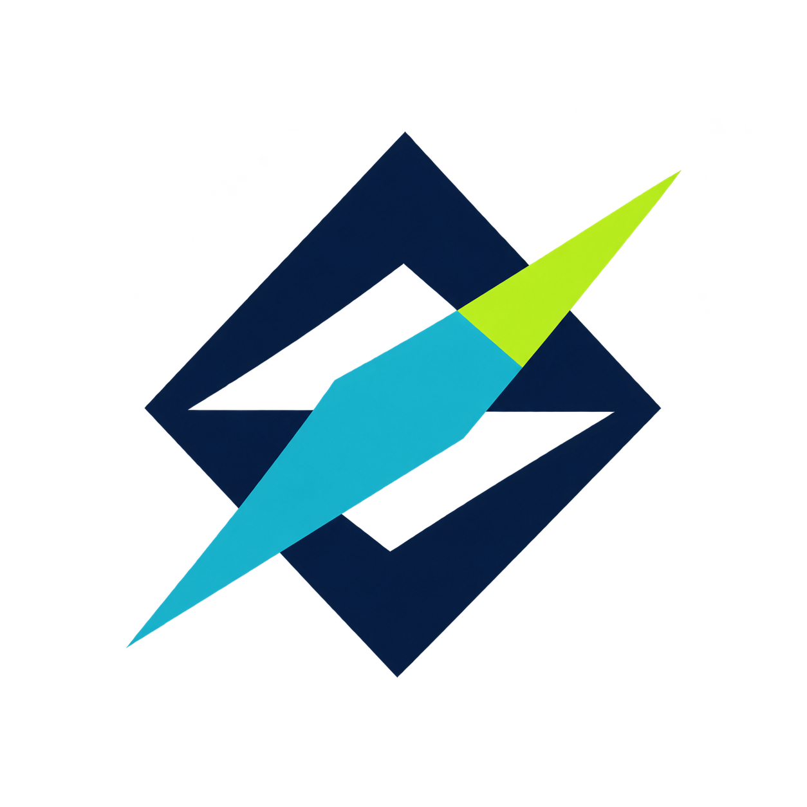
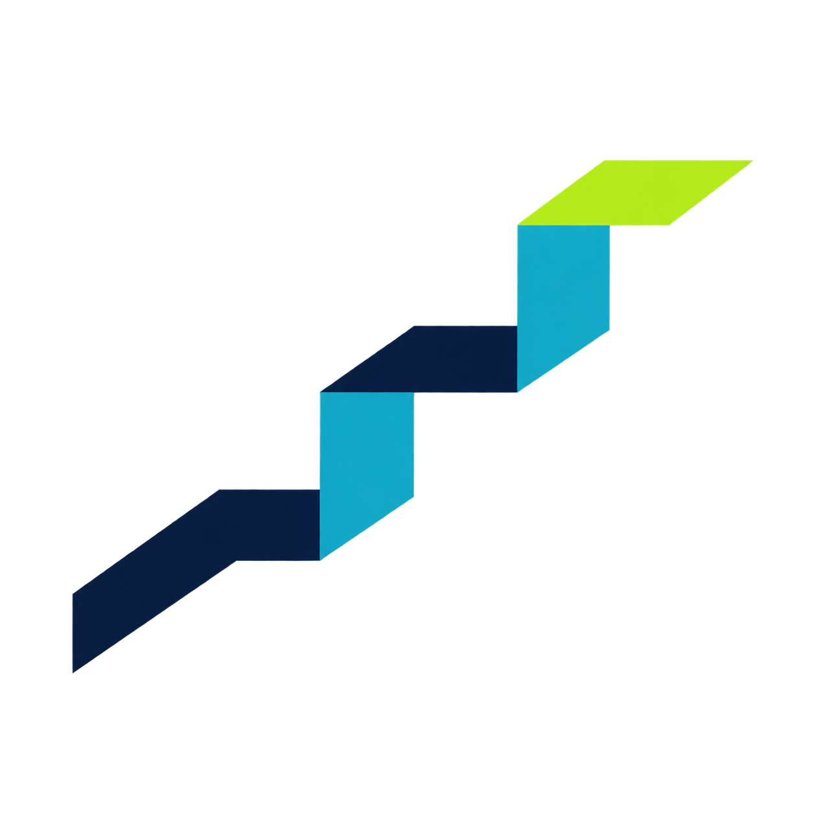

01Integrasi keilmuan

M Konvergensi
Tiga jalur membentuk huruf M. Masing-masing mewakili AI, analitika data, dan pengembangan platform.
Tampilan 24 px
S1 Manajemen Bisnis Digital · ISTTS
Bandingkan filosofi, siluet, dan keterbacaan. Opsi 01 adalah logo situs saat ini.
01Integrasi keilmuan

Tiga jalur membentuk huruf M. Masing-masing mewakili AI, analitika data, dan pengembangan platform.
02Identitas prodi

Huruf M, B, dan D menyatu dalam bentuk ringkas, langsung mengacu pada nama prodi.
03Analitika data

Tiga pilar bertingkat menunjukkan perubahan data menjadi pemahaman dan keputusan bisnis.
04AI dan kolaborasi

Tiga lengan bertemu di satu pusat, melambangkan riset dan kolaborasi yang menghasilkan solusi.
05Bisnis dan teknologi

Satu bentang menghubungkan sisi bisnis dan sisi teknologi, dengan tiga penopang yang menyatukan bidang prodi.
06Rekayasa platform

Tiga modul saling mengunci untuk menggambarkan komponen yang bekerja sebagai satu sistem digital.
07Dampak global

Tiga lintasan mengitari satu pusat, menggambarkan bidang prodi yang terhubung dengan ekonomi digital global.
08Pendidikan terapan

Buku terbuka mengarah ke satu modul digital, dari pengetahuan menuju karya yang dapat digunakan.
09Arah dan keputusan

Jarum pada bidang belah ketupat melambangkan keputusan yang terarah dalam bisnis digital.
10Kemajuan digital

Satu pita bergerak melewati tiga tingkat, melambangkan kemajuan dari ide hingga solusi bisnis yang diterapkan.